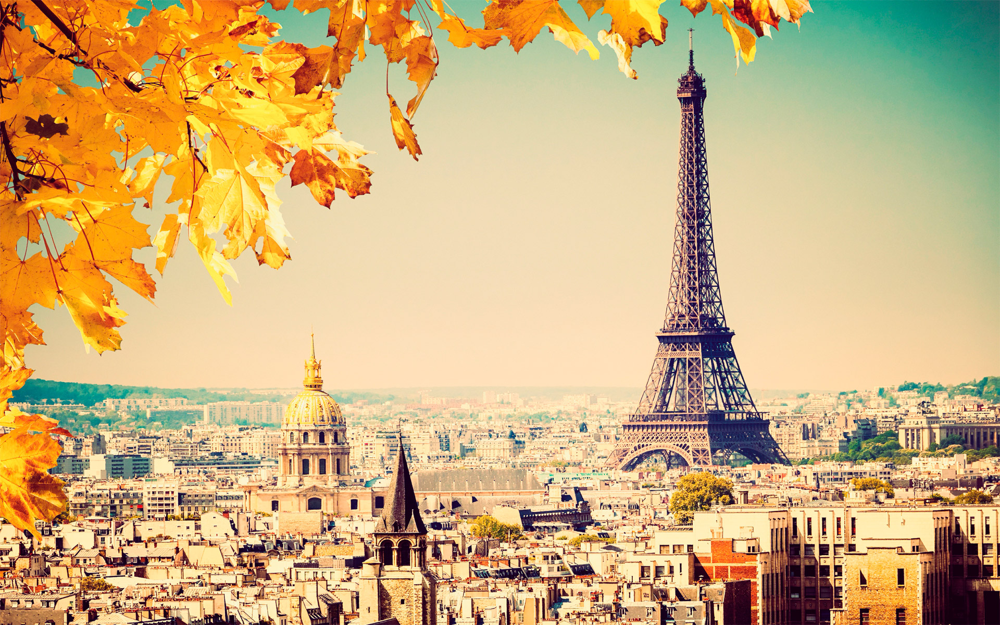
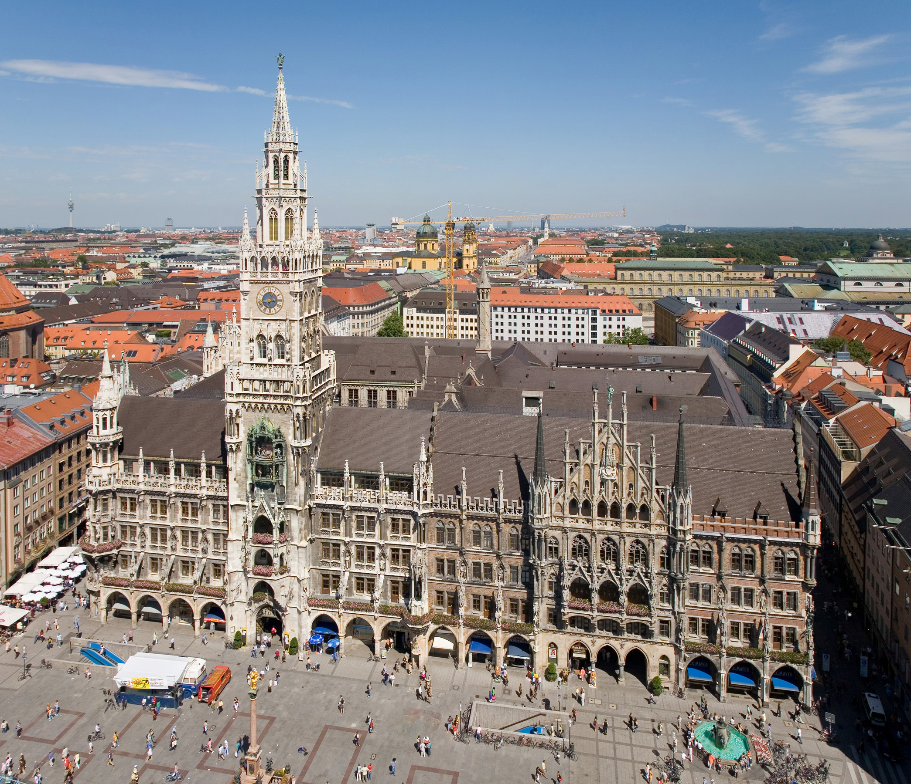
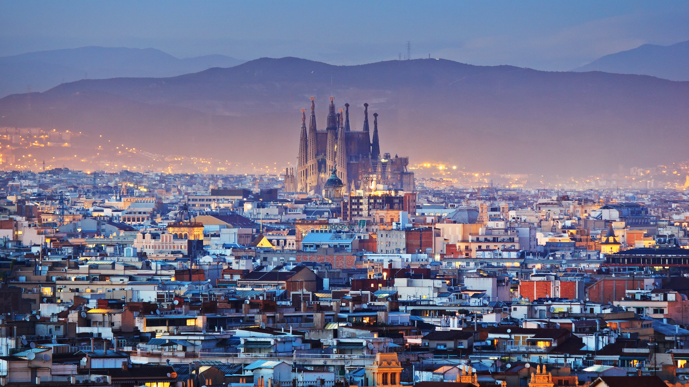

London has lots of soccer games throughout their city on the weekends. I hope to see at least 3 matches while I am there. Also I want to visit the Eye of London and Big Ben.

Paris has lots of museums that should be intersting to look at, like the lourve. Also It would be cool to go to the top of the Effiel Tower.
The main reason I would want to go to Munich is to watch my favorite soccer team play, Bayern Munich, and to see Robert Lewondowski.
When I go to Barcelona I hope to see the stadium where Barcelona plays as well as the architecture of the chaples there.
This is a great relaxing place, made even better with the Mediterranean Climate. Also the buildings there are really cool, hosting Red Bulls free running competitions.
Paris http://www.socialeconomy.eu.org/sites/default/files/Paris.jpg
London https://media.timeout.com/images/100644443/image.jpg
Munich https://upload.wikimedia.org/wikipedia/commons/7/73/Rathaus_and_Marienplatz_from_Peterskirche_-_August_2006.jpg
Barcelona http://2015.phpconference.es/wp-content/uploads/2015/05/barcelona1.jpg
Santorini http://foundtheworld.com/wp-content/uploads/2014/11/Santorini-Greece.jpg